Ganhar força suficiente para levantar sua esposa (55 kg) no colo e carregá-la por alguns segundos, com segurança e boa técnica — treinando o corpo todo (pernas, costas, ombros, braços e core), partindo de uma base sedentária, de forma gradual e com baixo risco de lesão.
O plano é dividido em duas sessões alternadas (A e B), repetidas 4 vezes por semana, ao longo de 3 fases de 4 semanas (12 semanas / ~3 meses). Cada sessão combina três tipos de trabalho: um bloco funcional (os padrões de movimento — agachar, dobrar o quadril, empurrar, puxar, carregar — que sustentam o objetivo principal), um bloco acessório (bíceps, tríceps, ombros e panturrilha, para desenvolver o corpo todo de forma equilibrada) e um bloco de core (estabilidade para proteger a lombar). Como seu equipamento de peso é limitado (halteres de até 6 kg), a progressão não vem apenas de aumentar o peso — ela vem de variações mais exigentes, tempo sob tensão, trabalho unilateral e maior volume.
Mobilidade articular + ativação, incluindo o padrão de hip hinge (rotina fixa, veja página de Aquecimento).
Funcional 4 exercícios de força/padrão de movimento, ligados diretamente ao objetivo.
Acessório 3 exercícios de bíceps, tríceps, ombro e panturrilha, com carga crescente ao longo do plano.
Core Estabilidade (prancha/dead bug) e alongamento leve da musculatura trabalhada.
Se algum dia estiver muito cansado ou dolorido, pode inverter Seg/Ter ou usar Qua como dia extra de descanso — o importante é manter 4 sessões e ao menos 1 dia de descanso entre a segunda sessão da semana e a terceira, quando possível.
Nesta fase o objetivo não é sofrer, é aprender o movimento correto e criar o hábito de treinar 4x por semana. Use pesos leves conscientemente, priorize amplitude completa e controle. Se um exercício doer (não confundir com cansaço muscular), pare e ajuste a amplitude.
| Bloco | Exercício | Séries x Reps | Descanso | Técnica / observação |
|---|---|---|---|---|
| Funcional | Agachamento livre (peso corporal) | 3 x 12 | 45s | Pés na largura dos ombros, desça como se fosse sentar, joelhos alinhados com os pés. |
| Funcional | Afundo alternado | 3 x 10 /perna | 45s | Passo controlado, tronco ereto, joelho de trás quase toca o chão. |
| Funcional | Elevação pélvica (ponte de glúteo) | 3 x 15 | 30s | Aperte o glúteo com força no topo, segure 1-2s. |
| Funcional | Subida no step/banco (peso corporal) | 3 x 10 /perna | 45s | Suba com controle apoiando o pé inteiro, sem impulso da perna de trás — prepara o movimento de "ficar em pé" com carga. |
| Acessório | Rosca direta (halteres 6 kg) | 3 x 8-12 | 45s | Cotovelos fixos junto ao corpo, sem balançar o tronco. |
| Acessório | Elevação lateral de ombro (halteres 5 kg) | 3 x 12-15 | 30s | Suba até a altura do ombro, cotovelo levemente flexionado, sem impulso. |
| Acessório | Panturrilha em pé (halteres 6 kg) | 3 x 15 | 30s | Suba devagar, desça em 2s controlados. |
| Core | Prancha frontal | 3 x 20-30s | 30s | Abdômen contraído, quadril alinhado ao corpo (sem "cair" nem subir demais). |
| Bloco | Exercício | Séries x Reps | Descanso | Técnica / observação |
|---|---|---|---|---|
| Funcional | Levantamento terra romeno (halteres 6 kg) | 3 x 10 | 45s | Quadril vai para trás, halteres deslizam perto das pernas, costas retas — este é o padrão-base para "abaixar até ela". |
| Funcional | Remada curvada (halteres 6 kg) | 3 x 12 | 45s | Tronco a ~45°, cotovelos junto ao corpo, aperte as escápulas no topo. |
| Funcional | Flexão de braço (apoiado nos joelhos se precisar) | 3 x 8-12 | 45s | Corpo alinhado, desça até quase tocar o chão. |
| Funcional | Farmer's Carry (transporte de carga) | 3 x 20-30s | 45s | Segure um halter em cada mão, ombros para trás, ande com passos curtos e firmes — treina exatamente a postura de quem carrega peso. |
| Acessório | Tríceps francês ou kickback (halteres 5 kg) | 3 x 8-12 | 45s | Cotovelo parado, só o antebraço se move. |
| Acessório | Elevação posterior de ombro (halteres 5 kg, tronco inclinado) | 3 x 12-15 | 30s | Cotovelos levemente flexionados, aperte as escápulas ao subir. |
| Acessório | Abdominal supra (crunch) | 3 x 15 | 30s | Suba só até tirar as escápulas do chão, sem puxar o pescoço. |
| Core | Prancha lateral | 2 x 15-20s /lado | 30s | Corpo alinhado dos pés à cabeça, quadril não cai. |
Faça o aquecimento padrão antes e o alongamento final depois de cada treino (ver página dedicada).
Como o peso dos halteres não aumenta, a dificuldade agora vem de três fontes: exercícios unilaterais (uma perna/braço de cada vez — dobra a carga relativa), tempo sob tensão (descidas de 3-4 segundos) e mais séries/repetições.
| Bloco | Exercício | Séries x Reps | Descanso | Técnica / observação |
|---|---|---|---|---|
| Funcional | Agachamento Goblet (1 halter de 6 kg junto ao peito) | 4 x 12 | 45s | Cotovelos passam por dentro dos joelhos na descida, tronco ereto. |
| Funcional | Afundo búlgaro (pé de trás apoiado no sofá, halteres 5 kg) | 3 x 10 /perna | 60s | Joelho da frente não ultrapassa a ponta do pé. |
| Funcional | Ponte de glúteo unilateral | 3 x 10 /perna | 45s | Uma perna estendida no ar, quadril nivelado. |
| Funcional | Agachamento isométrico na parede (wall sit) | 3 x 30-40s | 45s | Coxas paralelas ao chão, costas apoiadas na parede. |
| Acessório | Rosca direta (halteres 6 kg, descida em 3s) | 3 x 10-12 | 45s | Tempo lento na descida aumenta o estímulo sem precisar de mais peso. |
| Acessório | Elevação lateral de ombro (halteres 5 kg) | 4 x 12 | 30s | Uma série a mais que na Fase 1. |
| Acessório | Panturrilha unilateral (halter 6 kg) | 3 x 12 /perna | 30s | Apoie a mão livre na parede para equilíbrio. |
| Core | Prancha com toque no ombro | 3 x 30s | 30s | Quadril o mais parado possível ao tocar cada ombro. |
| Bloco | Exercício | Séries x Reps | Descanso | Técnica / observação |
|---|---|---|---|---|
| Funcional | RDL unilateral (halter 5-6 kg, apoio de equilíbrio se precisar) | 3 x 8 /perna | 60s | Fundamental para equilíbrio e força ao dobrar o quadril com carga assimétrica. |
| Funcional | Remada unilateral apoiada (halter 6 kg) | 3 x 12 /lado | 45s | Apoie a mão livre num banco/cadeira, puxe o cotovelo para trás. |
| Funcional | Flexão de braço com descida lenta (3s) | 3 x 10-15 | 45s | Controle total na descida, sobe normal. |
| Funcional | Farmer's Carry com pausa | 3 rounds | 60s | Segure parado 20s + caminhe 20s com os 4 halteres (~22 kg no total). |
| Acessório | Tríceps kickback (halteres 5 kg) | 3 x 10-12 | 45s | Cotovelo alto e parado, estenda todo o braço para trás. |
| Acessório | Elevação posterior de ombro | 4 x 12 | 30s | Uma série a mais que na Fase 1. |
| Acessório | Abdominal supra (crunch), tempo lento | 3 x 15 | 30s | Controle a descida em 2s. |
| Core | Dead bug (core anti-extensão) | 3 x 10 /lado | 30s | Lombar sempre encostada no chão — protege a coluna sob carga. |
Esta fase introduz o exercício mais importante do plano para o seu objetivo: o "Levantamento e Abraço", que treina o padrão motor exato de agachar, abraçar um peso junto ao corpo, levantar com as pernas e caminhar segurando-o. Também entra o agachamento com salto, uma forma de treinar potência de perna sem precisar de nenhum equipamento extra.
| Bloco | Exercício | Séries x Reps | Descanso | Técnica / observação |
|---|---|---|---|---|
| Funcional | Agachamento Goblet com pausa de 2s embaixo | 4 x 12 | 45s | A pausa aumenta muito a exigência de força nas pernas mesmo com pouco peso. |
| Funcional | Afundo búlgaro carregado (2 halteres de 6 kg) | 4 x 8 /perna | 60s | Se dominar bem, experimente o agachamento pistol assistido (apoiando as mãos numa cadeira). |
| Funcional | Subida no step/banco (step-up) com halteres | 3 x 10 /perna | 60s | Simula o momento de "ficar em pé" já com peso nos braços — movimento-chave para o objetivo final. |
| Funcional | Agachamento com salto (jump squat, peso corporal) | 3 x 8-10 | 60s | Agache e salte explosivamente, aterrisse suave dobrando os joelhos — treina a potência de perna que os halteres leves não conseguem treinar. |
| Acessório | Rosca direta (halteres 6 kg) | 3 x 10-12 | 45s | Se estiver fácil no topo da faixa, é sinal de considerar halteres mais pesados. |
| Acessório | Elevação lateral de ombro (tempo lento) | 4 x 12-15 | 30s | 2s subindo, 2s descendo. |
| Acessório | Panturrilha em pé, uma perna por vez | 3 x 12 /perna | 30s | Maior amplitude que a versão bilateral. |
| Core | Prancha longa | 3 x 45-60s | 30s | Meta da fase: chegar a 60s com boa forma. |
| Bloco | Exercício | Séries x Reps | Descanso | Técnica / observação |
|---|---|---|---|---|
| Funcional | RDL bilateral com tempo lento (4s descida) | 4 x 10 | 60s | Use os 2 halteres de 6 kg juntos. |
| Funcional | Levantamento e Abraço (bear hug lift) | 4 x (10-20s de pé) | 90s | Agache segurando uma mochila com 10-20 kg (livros, garrafas de água) junto ao peito, suba usando as pernas, fique em pé 10-20s e dê alguns passos. Veja detalhes na próxima página. |
| Funcional | Remada curvada (2 halteres de 6 kg, tempo lento) | 4 x 12 | 45s | Foque na contração das costas — é o que dá suporte ao "abraço". |
| Funcional | Farmer's Carry longo | 3 x 40-60s | 60s | Com os 4 halteres (~22 kg), meta de chegar a 60s contínuos. |
| Acessório | Tríceps francês (halteres 5-6 kg) | 3 x 10-12 | 45s | Cotovelo parado, amplitude completa. |
| Acessório | Elevação posterior de ombro (tempo lento) | 4 x 12-15 | 30s | 2s subindo, 2s descendo. |
| Core | Circuito Prancha + Dead bug | 3 rounds | 30s | 30s de prancha + 10 dead bugs por lado, sem descanso entre os dois. |
Cada exercício abaixo mostra as etapas do movimento em sequência, seguidas dos erros mais comuns (em vermelho) — a maioria das lesões de iniciante vem de um desses padrões repetidos treino após treino, não de um acidente pontual. Sempre que tiver dúvida sobre a sua execução, volte a esta página antes de aumentar peso ou repetições.
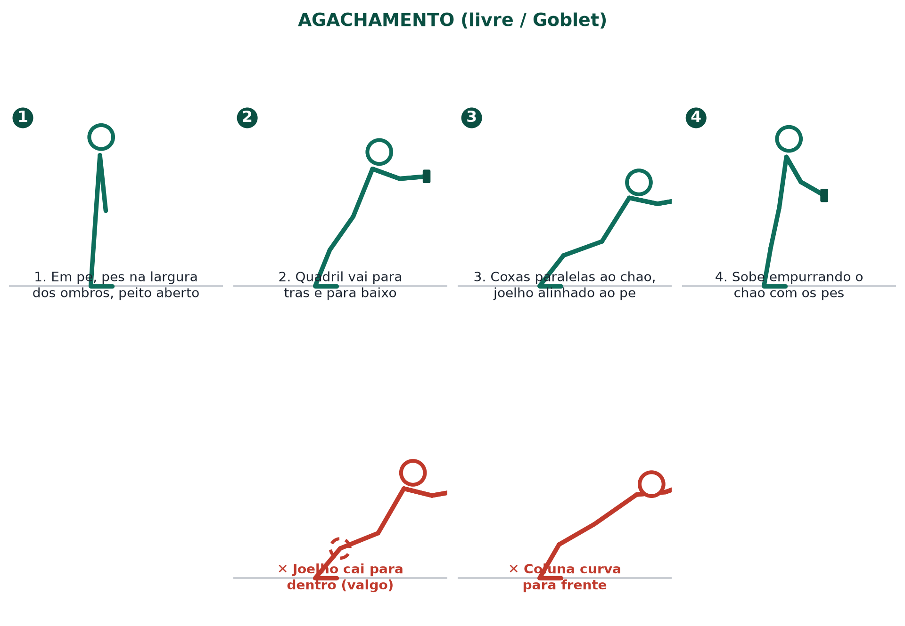
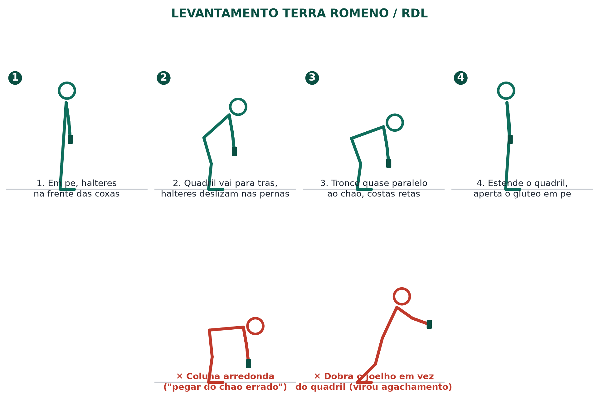
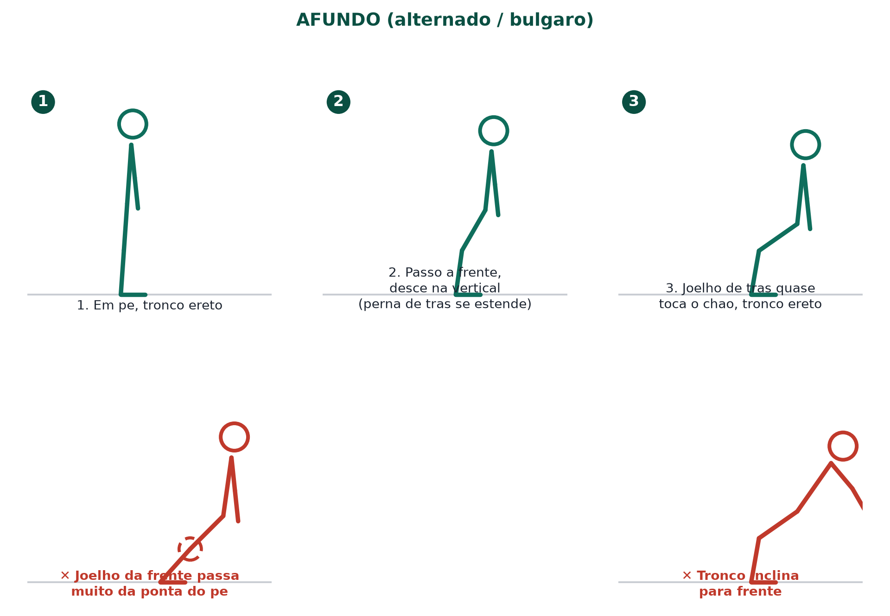
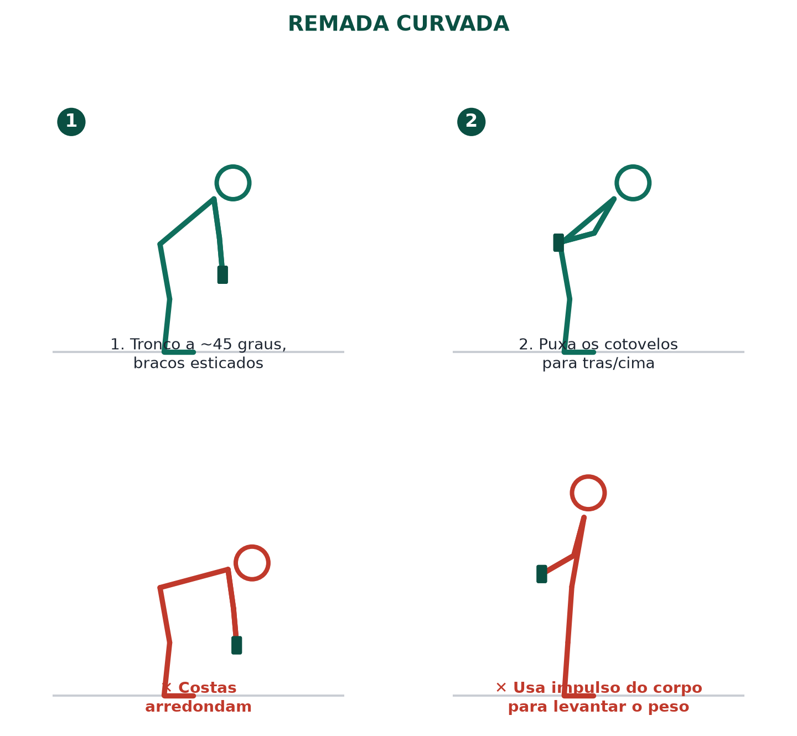
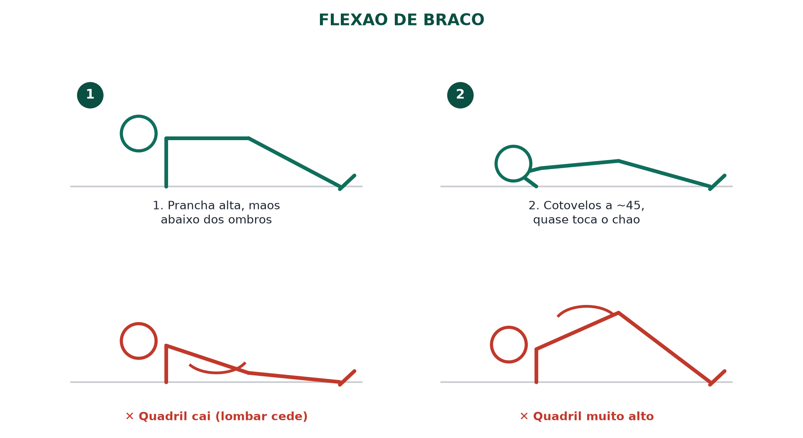
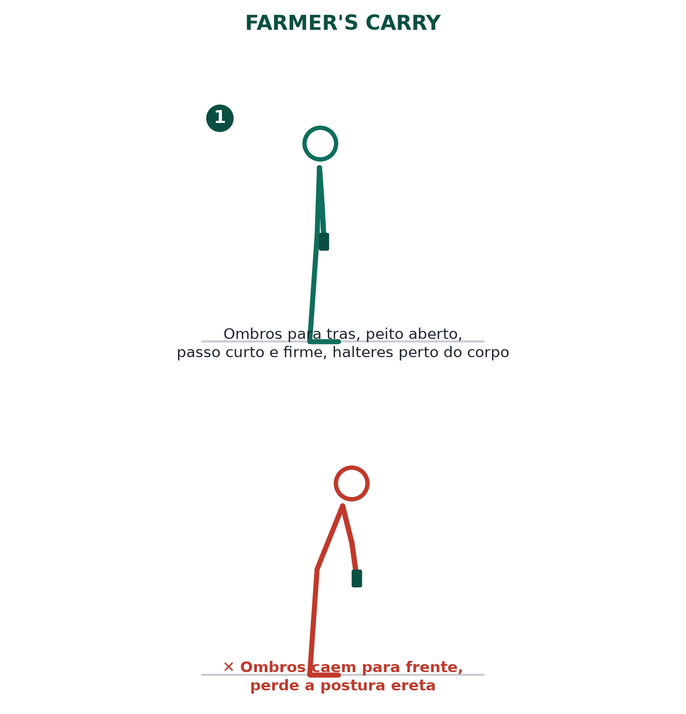
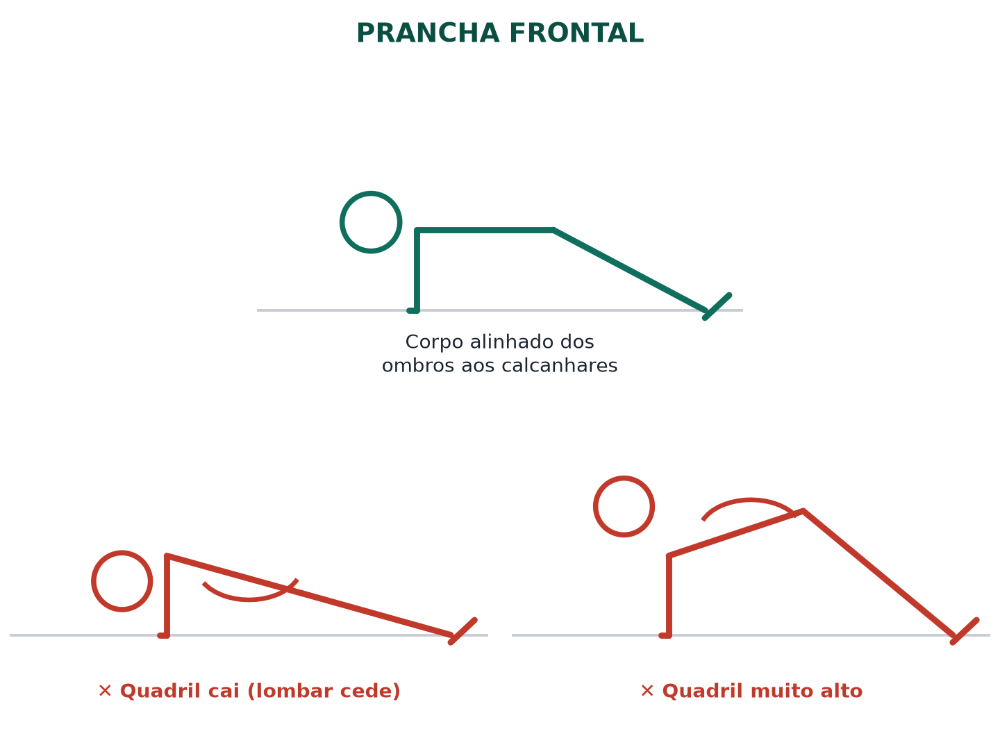
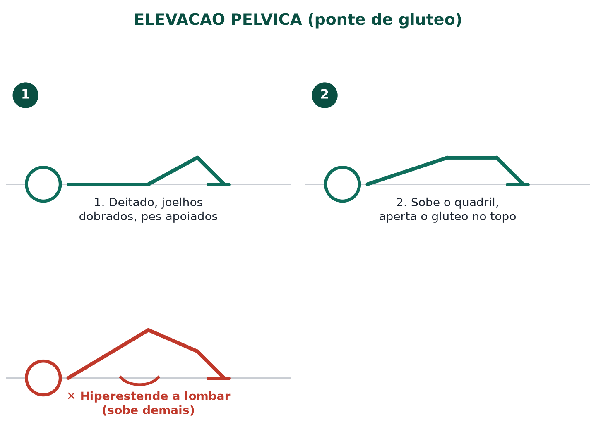
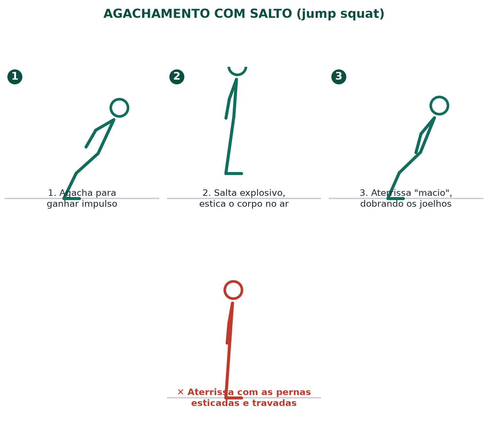
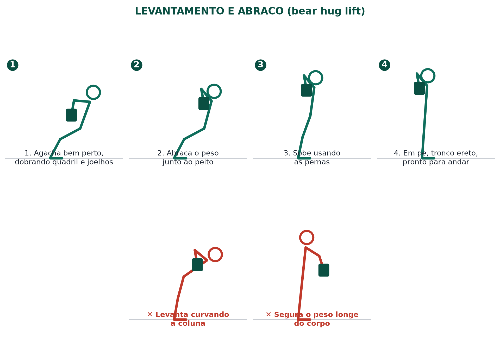
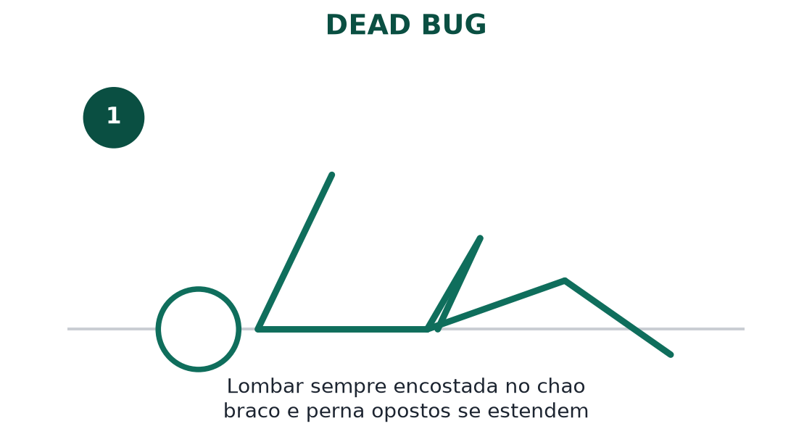
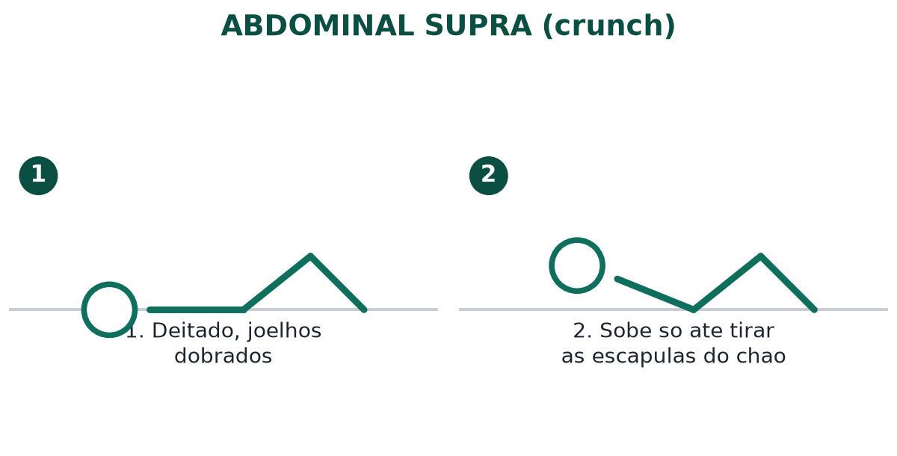
Não tente o levantamento real até estar consistentemente confortável com os pontos abaixo (geralmente ao final da Fase 3, por volta da semana 12). Isso garante que você tenha base suficiente para fazer o movimento sem comprometer a lombar.
Ao final das 12 semanas, você deve conseguir realizar o levantamento com boa técnica. A partir daí, o plano pode evoluir para incluir outros objetivos, halteres mais pesados/ajustáveis, um kettlebell (se decidir adicionar) e treinos de maior intensidade.
Plano elaborado com base nas informações fornecidas (39 anos, 68,5 kg, 173 cm, sedentário, equipamento: colchonete + halteres de 5 kg e 6 kg). Ajuste conforme sua evolução e sensações durante os treinos.